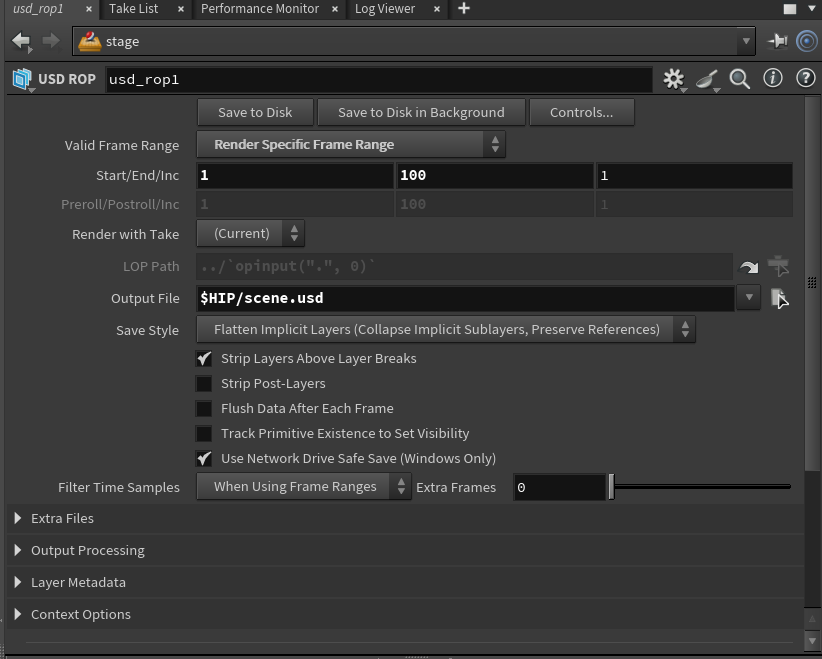
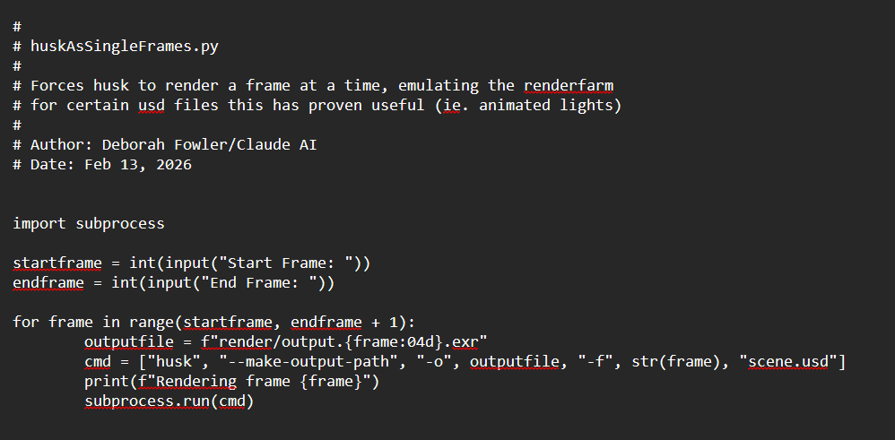
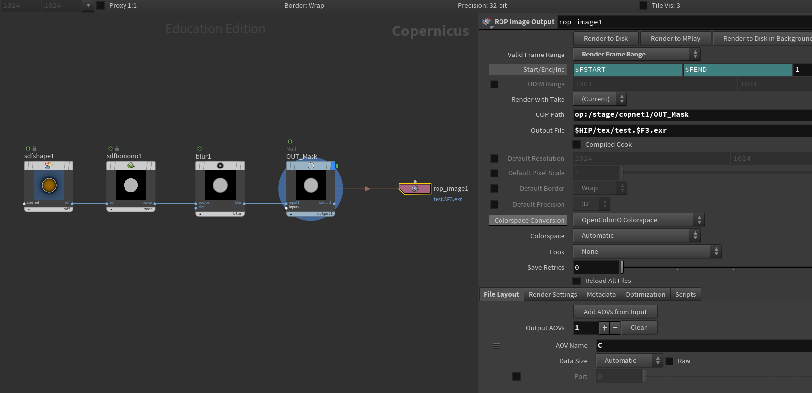
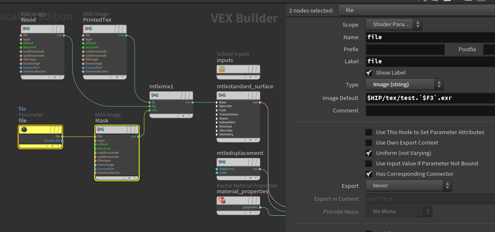
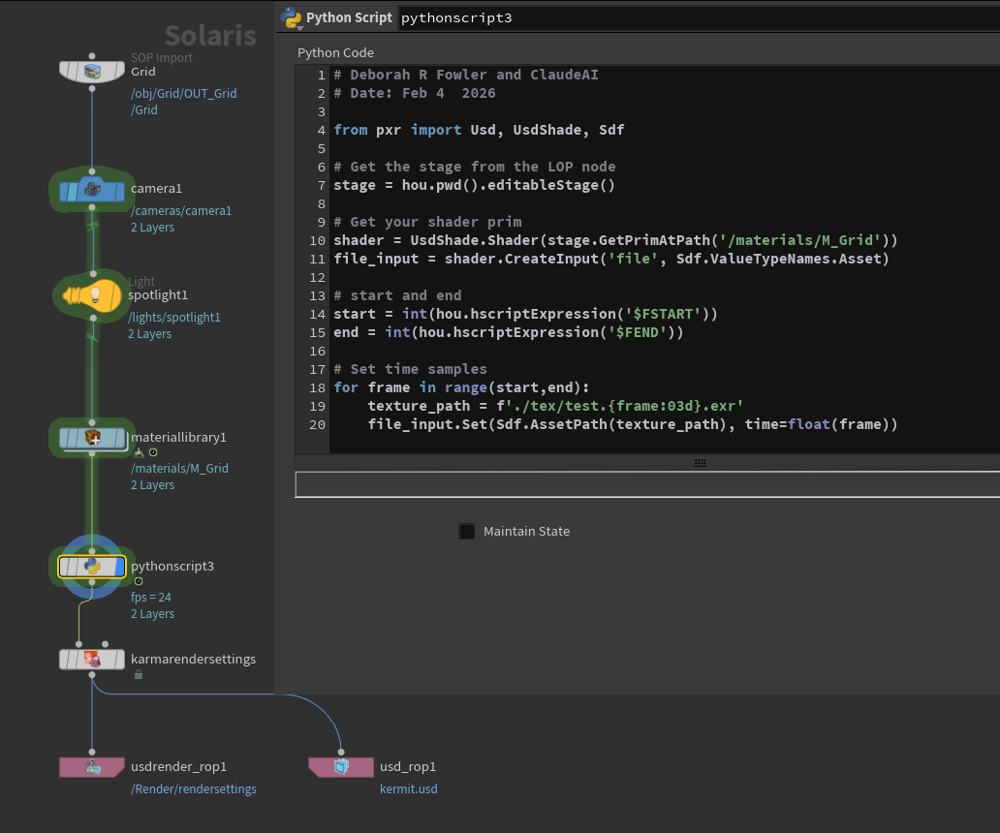
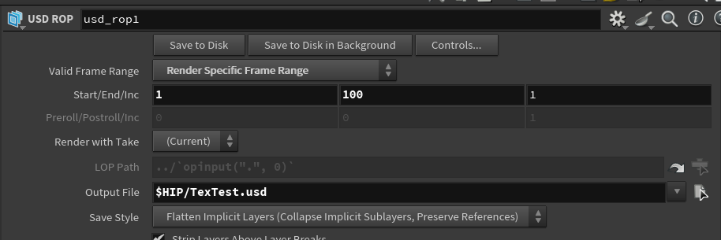
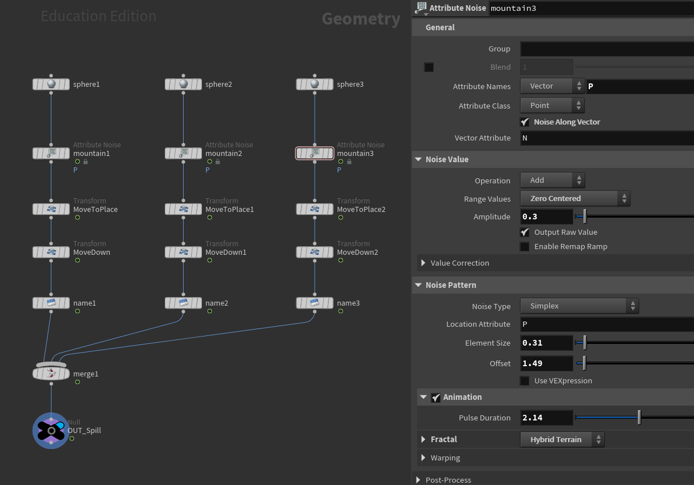
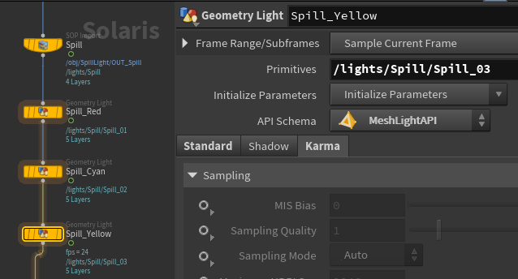
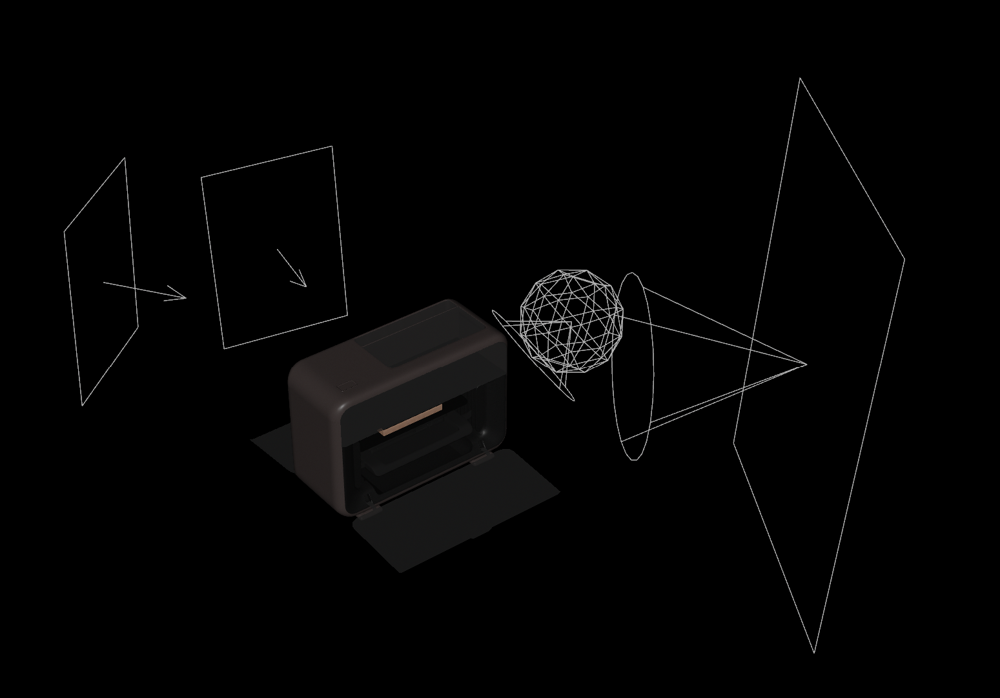

Week 09 - Refine Lighting | Add Sound | Rendering
Feb 24 - Mar 02, 2026
Mentors Feedback and Suggestions
Particles are inconsistent across shots
Ensure backgrounds match across shots
Shot 1: Add motion blur to particles
Shot 1: Ground could be more colorful to balance the top lighting
Shot 2: left side too bright
Shot 3: Could use moodier lighting and feels dead before particles — consider adding an extra light
Shot 3: Improve integration between particles and the printed texture
Shot 3: Boost laser sound effects
Shot 3: Up-res wood texture and sdd bevels and bump detail
Shot 4: Would benefit from three-point lighting and subtle color
Shot 4: Refine particle shape, smoothness, and variation
Shot 4: too bright
Shot 4: Consider whether the final painting is necessary
Completed
Team Tasks
Shot 1: Refine particles
Shot 3: Fix color and density of particles
Shot 3: Refine wood material and painting material
Shot 3: Printer Laser
Shot 1-4: Refined overall lighting
Render AOVs for all shots
Add motion vectors for particles
Lighting and Color adjustment
Add depth of field
Individual Tasks
Shot 3: Lighting on the particles
Shot 3: Refine the wood board model
Shot 3: Trim the beginning of the shot slightly
Shot 4: Add colored lights
Refine and add sound effects
To-Do Lists
Team Tasks
Shot 3: Refine particles
Render AOVs
Lighting adjustment
Individual Tasks
Refine sounds
Fix USD and Animated Lights Intensity Issue
Problem: When writing out USD and doing command line rendering (husk command),
it used information from just the first frame of the lights that have been keyframed on attribute such as intensity. This resulted in no change of the value.
Solution: Write a python script to force single frame render to make it recalculate the light value every frame
Credit: https://deborahrfowler.com/HoudiniResources/Overview-CommandLineRenderingKarma

Writing out USD file

Save this python script in project folder, rename USD file and format to match your USD file then run "python NameOfThisPythonFile.py"
Fix USD and Animated Texture (COP Net) Issue
Problem: When writing out USD, it used information from just the first frame of the texture sequence, causing the animated texture to stop
Solution: Write a python script in Houdini Solaris to force the USD to resample texture map every frame
Credit: https://deborahrfowler.com/HoudiniResources/Overview-KarmaTexAnimated

Writing out the texture map from COP Net

Import the texture sequence to file node in MaterialX.

Write python script to force the USD to resample texture map every frame.
Change the filename in texture_path variable to match the texture sequence

Export USD file
Refine Lighting
Add spill lighting in shot 1 with mesh lights

Geometry setup for mesh lights

Mesh lights setup in Solaris - in Geometry Light node, add path to the geometry to primitives path and change API Schema to Mesh Light API
Refine the lighting at beginning of shot 3

Lights setup - use light linker to light specific object without affecting others